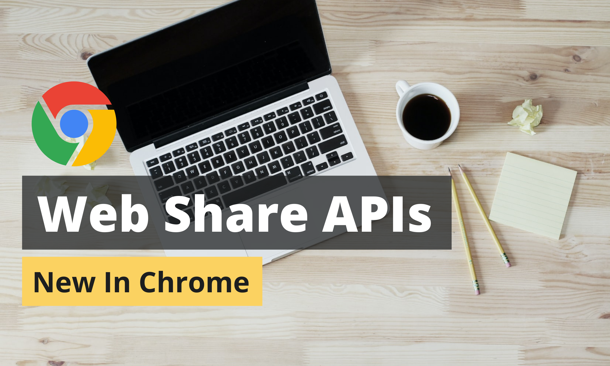
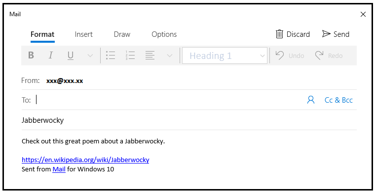
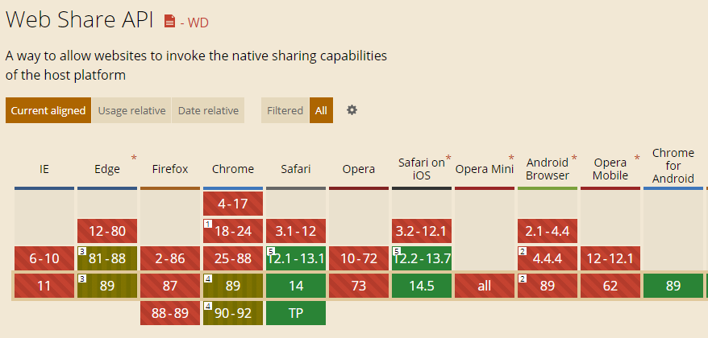

现代 Web 应用程序中的 Web 分享

最近，Windows 和 Chrome OS（译者注：其实还有 macOS）开始支持 Web 分享 和 Web Share API，这吸引了不少 Web 开发者的目光。
不知道你有没有接触过 Web Share API？我想你们中的很多人应该都听说过这个词吧！Web Share API 其实已经出现一段时间了，只不过最初只有移动设备支持 Web Share API。
Web Share API —— 快速演示
我们可以按照以下步骤，对 Web Share API 进行快速测试 —— 在网页与其他应用程序之间进行数据分享。

- 首先，确保你使用的是最新版本的谷歌浏览器。
- 打开浏览器，打开这个链接，点击分享按钮。
- 你可以打开任何允许分享的应用程序。此外，它还支持与附近的设备分享。
- 点击分享后，你就可以在目标应用程序中查看分享的数据。我这里使用邮件作为应用程序。如图所示，应用程序会将 Web Share API 传递过来的文本数据添加到电子邮件正文中。

我希望你在尝试以后会感到高兴！ —— 至少这是我在浏览器中查看 Web Share 功能演示时的第一印象。
在实践中使用 Web Share
分享链接和文本
你可以使用一个简单的 share() 方法来分享你想要的链接和文本。下面给出的代码片段可以帮助你完成 Web Share：
if (navigator.share) {
navigator.share({
title: 'juejin.cn',
text: '访问掘金开发者社区',
url: 'https://www.juejin.com/',
}).then(() => console.log('分享成功！'))
.catch((error) => console.log('分享时候遇到了错误……', error));
}
分享文件
文件分享与 URL 分享有些不同 —— 你必须先调用 navigator.canShare() 确认是否可以分享文件，然后才可以在调用 navigator.share() 时添加一个文件数组。
if (navigator.canShare && navigator.canShare({files: fileArr})) {
navigator.share({
files: fileArr,
title: '我的相片集',
text: '北极de假期',
}).then(() => console.log('分享成功！'))
.catch((error) => console.log('分享时候遇到了错误……', error));
} else {
console.log(`你的浏览器不支持分享这些文件……`);
}
分享目标
要成为分享目标，应用程序需要满足 Chrome 设置的一些标准。你可以浏览一下这篇帮助文档来查看这些条件。
要在网络应用清单中注册，你必须添加一个 share_target。这会提醒浏览器将该应用视为一个可能的分享选项，如下文所示：
- 接收基本信息
- 接收文件
- 接收应用程序变更
你必须使用 Web Share Target API 来声明分享目标。它可以明确与其他应用程序分享的文件和内容：
{
"share_target": {
"action": "/?share-target",
"method": "POST",
"enctype": "multipart/form-data",
"params": {
"files": [
{
"name": "file",
"accept": [
"image/*"
]
}
]
}
}
}
不过在已安装的应用程序之间传输文件会比较容易。你可以分享链接、文件等多种类型。
async function share(title, text, url) {
try {
await navigator.share({title, text, url});
return true;
} catch (ex) {
console.error('分享失败……', ex);
return false;
}
}
Web Share API —— 功能和局限性
功能
- 使用 Web Share，你的 Web 应用程序可以像特定平台的原生应用程序那样使用系统提供的分享功能。
- 开发者可以获得更全面的分享选项。
- 可以在设备中自定义分享目标和设备。因此，你可以提高页面加载速度。
- Web Share API 有助于分享文本、URL 和文件。此外，Web Share 也扩展来其支持分享的范围。
- 它适用于 Chrome OS、Windows 平台的 Chrome、Safari 和 Android 的 Chromium 内核浏览器。
局限性
然而，无论这个功能有多好，它也有不少缺点和局限性。
-
首先，只有通过 https 访问的网站才能使用 Web Share。
-
还有一点就是，你不能用类似于
onload的操作来调用它，它必须通过用户的交互行为进行调用。比如说，用户可以通过点击调用它。 -
另外，Mac 平台的 Chrome 的这个功能还在开发中。
小结
Web Share API 是一个现代化的 Web 平台功能，它有助于我们在社交网络、短信和注册目标应用之间更轻松地分享内容。
Chrome 是支持 Web Share Target API 的主要浏览器之一。此外，Safari 也支持它。

但是，Web Share API 应该由用户主动操作触发，这样做是为了减少不便和滥用。
谢谢你的阅读。欢迎在下方留言，分享你的经验。
如果发现译文存在错误或其他需要改进的地方，欢迎到 掘金翻译计划 对译文进行修改并 PR，也可获得相应奖励积分。文章开头的 本文永久链接 即为本文在 GitHub 上的 MarkDown 链接。
掘金翻译计划 是一个翻译优质互联网技术文章的社区，文章来源为 掘金 上的英文分享文章。内容覆盖 Android、iOS、前端、后端、区块链、产品、设计、人工智能等领域，想要查看更多优质译文请持续关注 掘金翻译计划、官方微博、知乎专栏。